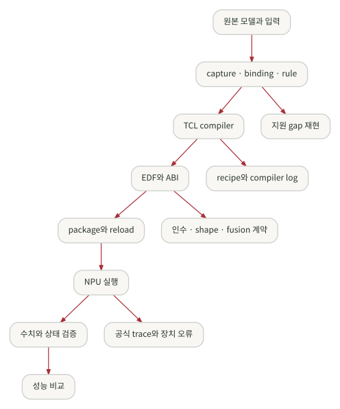

“안 된다”를 최초 실패 단계, 정확한 입력 계약, 산출물, 실행 증거로 나누면 고칠 파일이 보인다. 이 장은 모델 전체를 매번 다시 돌리기보다, 현재 문제를 증명하는 최소 경로를 만드는 실습이다. 소스 기준은 FuryNo5 commit bba9efea8201aec48150514a35d0b637d29d107e이며, 명령을 실행할 환경의 SDK(Software Development Kit) 버전을 먼저 기록한다.
먼저 어느 층에서 실패했는지 구분한다

그림의 구조 보기
flowchart TB
A["원본 모델과 입력"] --> B["capture · binding · rule"]
B --> C["TCL compiler"]
C --> D["EDF와 ABI"]
D --> E["package와 reload"]
E --> F["NPU 실행"]
F --> G["수치와 상태 검증"]
G --> H["성능 비교"]
B --> I["지원 gap 재현"]
C --> J["recipe와 compiler log"]
D --> K["인수 · shape · fusion 계약"]
F --> L["공식 trace와 장치 오류"]| 처음 실패한 지점 | 필요한 증거 | 우선 볼 코드 |
|---|---|---|
| capture | 최초 달라진 graph, 원본/변환 CPU 결과 | graph_capture.py |
| binding | 인수 순서, shape/dtype/stride/offset, state | edf_export.py |
| rule | 직접 차단 이유와 영향을 받은 node | 해당 *_rules.py |
| compile | 정확한 TCL, compiler version, exit/timeout, log | compile_job.py |
| ABI(Application Binary Interface) | 공식 EDF loader의 입출력 정보 | tcl_compiler._verify_abi |
| package | manifest·파일 해시·계획 연결 | producer와 fxbX consumer |
| runtime | expected step과 공식 Task, CPU route | verified_worker.py |
| numerical | 최초 오차 좌표, dtype, 허용오차, 입력 | 해당 의미 규칙과 oracle |
| performance | cold/warm 범위, 완료 기준, trace | profile_hotspots.py |
소스의 수정 진입점은 다음과 같다. NPU 작업을 시작하는 명령이 아니라, 해당 단계의 소유 파일과 점검 항목을 안내한다. 수정 가이드권한 필요
python -m tplmachine.repair route compile --kind fp32_contraction
실습 1. 환경 지문과 입력 계약을 남긴다
다음은 읽기 전용 정보 수집 예제다. furiosa-smi의 정보는 장치 존재·버전·상태를 파악하는 자료이며, 특정 모델이 NPU에서 실행되었다는 증거는 아니다.
python --version
furiosa-tcc --version
furiosa-tcc --help
furiosa-smi info --format json
package 버전은 다음처럼 수집한다. 설치되어 있지 않으면 없는 상태로 남긴다.
import importlib.metadata as md
import json
versions = {}
for name in ("torch", "furiosa-torch", "furiosa-tcc", "fxbx", "tplmachine"):
try:
versions[name] = md.version(name)
except md.PackageNotFoundError:
versions[name] = None
print(json.dumps(versions, indent=2))
입력 tensor는 shape뿐 아니라 dtype, stride(), storage_offset(), requires_grad, 장치, 정적 속성을 함께 기록한다. 같은 [1,128,128]이라도 permutation의 view인지 contiguous 복사인지에 따라 규칙과 비용이 달라진다.
def tensor_contract(x):
return {
"shape": list(x.shape),
"dtype": str(x.dtype),
"stride": list(x.stride()),
"storage_offset": x.storage_offset(),
"device": str(x.device),
"requires_grad": x.requires_grad,
}
이 계약은 모델/입력의 실제 값을 공개하지 않고도 실패 원인을 좁히는 데 도움이 된다. 정적 상수의 값에 따라 specialization했다면 값 해시와 그 guard도 필요하다. 계획의 계약·guard 관리권한 필요
실습 2. 미해결 node를 독립 문제 수로 오해하지 않는다
export_model(..., preflight_only=True) 결과의 operator-inventory.json에는 metadata admission, 직접 규칙/계약 gap, 선행 binding dependency가 나뉘어 있다. 첫 transpose 결과를 만들지 못해 그 뒤 100개 node를 연결하지 못했다면, 101개 TCL을 새로 작성해야 한다는 뜻이 아니다.
import json
from collections import Counter
from pathlib import Path
root = Path("model.fxbx.plan")
inventory = json.loads((root / "operator-inventory.json").read_text())
print(Counter(row["admission"] for row in inventory["nodes"]))
groups = json.loads((root / "failure-groups.json").read_text())
for row in sorted(groups, key=lambda x: -x["occurrences"])[:5]:
print(row["op"], row["occurrences"], row["reason"])
이 예제는 해당 실패 파일이 있는 경우에 실행한다. 통과한 preflight에 failure-groups.json이 없는 것은 정상이다. source 위치·대표 shape·최초 직접 차단을 보고 공통 원인을 고친 후, 영향을 받은 모델만 다시 검사한다. 진단 생성부권한 필요
실습 3. 느리거나 실패한 compiler 작업 하나만 재현한다
먼저 compile-status.json에서 실패한 kernel key를 고른다. 다음 명령은 보존된 요청을 조회하고, 선택한 요청 하나만 다시 컴파일하는 실제 CLI(Command-Line Interface)다.
# 먼저 작은 목록 확인
python -m tplmachine.compile_recipe model.fxbx.plan/compile-requests.json
# FAILED_KEY는 위 목록에 실제로 존재하는 키로 교체
python -m tplmachine.compile_recipe model.fxbx.plan/compile-requests.json \
--key FAILED_KEY --output one-kernel-result.json
이 경로는 모델을 다시 다운로드하거나 전체 graph를 다시 캡처할 필요를 줄인다. compiled_not_numerically_validated는 ABI까지 컴파일 단계가 통과했다는 보고이며, NPU 정답 검증은 아직 남아 있다. compile_recipe.py권한 필요
compile-attempts의 해당 attempt에는 source.tc, compile.log, result.json이 있다. 결과의 last_stage, elapsed_s, returncode, timeout_s를 같이 읽는다. 시간제한 종료를 “하드웨어 미지원”으로 캐시하지 않는다. 현재 기본 timeout이 무제한이므로 작업 예산이 필요한 경우 명시적으로 지정한다.
FURYNO5_COMPILE_TIMEOUT_S=1800 \
python -m tplmachine.compile_recipe model.fxbx.plan/compile-requests.json \
--key FAILED_KEY --output bounded-retry.json
여기서 1,800초는 이 예제의 작업 예산일 뿐 성공 예상시간이 아니다. 의미·정밀도를 바꿔 빨리 끝나게 하기 전에, 정확한 재현 source와 메모리·thread 경쟁을 확인한다. compile_job.py권한 필요
실습 4. 실행 증거를 수집한다
다음 함수는 이미 준비된 fxbX runtime과 입력 tuple을 받아 공식 profiler로 한 요청을 기록한다. FXBX_TRACE_STEPS는 runtime을 만들기 전에 설정한다. profiler 활성화 시간은 성능 비교의 정답으로 사용하지 않는다.
import os
from pathlib import Path
from furiosa.torch.profiler import Profiler
os.environ["FXBX_TRACE_STEPS"] = "1"
def record_one(runtime, inputs, trace_path="request-trace.json"):
destination = Path(trace_path)
if destination.exists():
raise FileExistsError(destination)
with Profiler(str(destination)):
outputs = runtime.predict(inputs)
return outputs
FuryNo5의 현재 검증기는 execution_plan::forward::... host span과 이에 대응하는 ::Task::execution_plan::... 이름을 대조하고, run_by_cpu 이벤트를 확인한다. 예상한 step이 빠지거나 엉뚱한 step이 들어 있으면 증거 불완전으로 본다. 정적 상수 준비의 예외는 별도 분류한다. 실제 trace_evidence권한 필요
다음 관측만으로는 충분하지 않다.
| 관측 | 확인되는 것 | 추가로 필요한 것 |
|---|---|---|
tensor.device == "furiosa:0" |
tensor의 장치 표기 | 실제 실행 task |
| SMI 사용률 상승 | 그 시간 장치 활동 | 내 요청/내 step과의 연결 |
| compiler 반환 성공 | 산출물 생성 | 실행·수치 |
| host launch span | 제출 시도 | 완료된 장치 task |
| CPU route 0 | 해당 collector가 그 이름을 못 봄 | 누락 step·collector 범위 확인 |
다른 adapter나 병합 실행 모드에서 trace 구조가 바뀌면 이름 규칙도 검토해야 한다. 텍스트 검색 결과를 하드웨어 인증으로 승격하지 않는다.
실습 5. trace에서 병목 후보를 찾는다
trace_report.py는 계획과 trace를 받아 step 관측 누락, CPU route 표식, kernel별 task work를 요약한다.
python examples/trace_report.py \
model.fxbx.plan/execution-plan.json request-trace.json \
--entry forward --out trace-summary.json
이 도구는 진단 도구다. 숫자·tensor·파일 무결성 검사를 하지 않으므로 성공 인증서를 출력하지 않는다. trace의 시간 단위는 Chrome trace의 microsecond 규약과 현재 adapter의 형식을 전제로 한다. task 합에는 겹친 task가 중복 포함될 수 있다.
producer 설치본에서는 더 엄격한 해당 버전의 hotspot 기능을 사용할 수도 있다.
import json
from pathlib import Path
from tplmachine.profile_hotspots import rank_hotspots
plan = json.loads(Path("model.fxbx.plan/execution-plan.json").read_text())
events = json.loads(Path("request-trace.json").read_text())
for row in rank_hotspots(plan, events, entry="forward", limit=5):
print(row["kernel"], row["calls"], row["task_us"])
현재 함수는 상태 갱신이 있는 entry나 불완전한 timing coverage를 제한하고, CPU route가 관측되면 순위를 만들지 않는다. 결과의 task_us는 end-to-end latency 예측치가 아니다. hotspot 구현권한 필요
가장 느린 kernel key를 찾았다면 compile-requests.json의 같은 key로 의미 계열과 shape를 연결한다. 이후 TCL source, layout, 크기, 반복 횟수, 입출력 이동을 검토한다. 이름이 같은 EDF가 여러 입력에서 호출될 수 있으므로 단일 이벤트를 전체 모델 병목으로 일반화하지 않는다.
실습 6. trace와 별개로 완료 시간을 잰다
다음 함수는 반환 시 실제 결과가 완료된 callable을 측정한다. 일반 비동기 launch 함수에 그대로 사용하면 제출 시간만 측정하므로 부적절하다. fxbX의 CPU 결과를 반환하는 predict 경로처럼 완료가 확인되는 함수를 전달하거나, 장치 resident 경로의 공식 완료 대기를 callable 안에 넣는다.
from time import perf_counter_ns
from statistics import median
from math import ceil
def measure_completed(call, *, warmup=5, repeats=30):
for _ in range(warmup):
call()
samples = []
for _ in range(repeats):
start = perf_counter_ns()
call()
samples.append(perf_counter_ns() - start)
ordered = sorted(samples)
return {
"median_ns": median(samples),
"p95_ns": ordered[ceil(0.95 * len(ordered)) - 1],
"samples_ns": samples,
"scope": "callable must return completed outputs",
}
30회는 튜토리얼 시작값이지 tail latency를 확정하기에 충분하다는 보장이 아니다. 짧은 kernel은 여러 호출을 한 block으로 묶어 측정 비용을 줄이고, A/B/B/A처럼 순서를 바꾸어 시스템 변화의 영향을 관찰한다. compile·profiling과 성능 측정을 같은 CPU 자원에서 동시에 수행하면 host contention이 섞일 수 있다. FuryNo5의 보존된 runtime 선택 실험도 준비와 측정 구간을 나누었다. 실측 프로토콜권한 필요
실습 7. 수치 실패는 첫 경계에서 찾는다
원본 CPU 결과 → 정규화 CPU 결과 → 각 EDF의 NPU 결과 → 최종 package 결과 순서로 비교한다. 원본과 정규화 CPU가 이미 다르면 물리 NPU kernel부터 수정할 이유가 없다.
# reference와 actual은 같은 shape/dtype 계약의 CPU tensor.
import torch
def error_report(reference, actual, *, atol, rtol):
if reference.shape != actual.shape:
return {"shape_mismatch": True}
expected = reference.to(torch.float64)
got = actual.to(torch.float64)
error = (got - expected).abs()
limit = atol + rtol * expected.abs()
bad = (~torch.isfinite(got)) | (~torch.isfinite(expected)) | (error > limit)
where = bad.nonzero()
first = where[0].tolist() if where.numel() else None
return {
"outside_tolerance": int(bad.sum()),
"max_abs_error": float(error.max()) if error.numel() else 0.0,
"first_bad_index": first,
}
이 예제는 유한 실수 결과를 기대하는 간단한 진단 정책이다. 정상 출력에 NaN/Inf가 허용되는 연산은 별도의 명시적 비교 정책이 필요하고, 정수·bool·인덱스는 정확한 일치를 확인한다. max_abs_error 하나만으로 실패 위치를 숨기거나, 관측 결과에 맞춰 허용오차를 자동으로 늘리지 않는다. 독립 출력 비교 구현권한 필요
상태를 가진 모델은 첫 호출만 맞아서는 부족하다. 입력 변경, 반복 호출, reset 뒤 결과, state-only 출력 처리까지 확인한다. 고정 shape의 state slot 검증을 동적 KV(Key/Value) paging 검증과 동일시하지 않는다.
furiosa-opt를 어디에 연결할 것인가
TCL 기반 문제는 먼저 보존된 TCL·compiler 로그·EDF trace로 좁힌다. furiosa-opt의 schedule/low-level dump는 해당 도구로 빌드되는 kernel이나 재현용 vISA(virtual Instruction Set Architecture) 구현의 병목을 조사할 때 사용한다. 임의의 SDK EDF를 넣으면 원래 Python/TCL과 모든 물리 schedule이 자동 복원된다고 가정하지 않는다.
FuryNo5의 official_tools.capabilities()는 설치된 furiosa-tcc --help에서 --evaluate-tcl 등 지원 옵션을 확인한다. 지원하는 경우의 cycle estimate와 NPU task 측정치를 구분해서 보존한다. eISA와 opt 도구의 구체적인 재현·schedule viewer 절차는 08장을 따른다. capability probe권한 필요 · 공식 도구 안내
좋은 실패 보고서의 최소 내용
한 문제당 다음 내용을 남기면 다음 개발자가 전체 모델을 다시 분석할 필요가 줄어든다.
- 원본 commit, SDK/compiler/driver, target·fusion·mesh.
- 최초 실패 단계와 원래 오류 메시지.
- operator overload와 입력 shape/dtype/stride/속성.
- 해당 source·recipe·EDF·plan의 경로와 해시.
- 실행한 검사, 통과한 범위, 아직 모르는 범위.
- 다음 실험 하나와 성공·실패를 가르는 고정 조건.
문서 검증 상태: 이 핸드북의 보조 스크립트는 정적 구문과 합성 진단 입력으로 확인한다. 기록된 과거 RNGD 결과는 원본 증거와 날짜를 붙인다. 이번 집필 환경에서 새 NPU 수치·성능 검증을 수행한 것은 아니다.
출처
| 자료 | 확인 범위 |
|---|---|
| FuryNo5 수정 가이드권한 필요 | 단계별 소유권과 재현 순서 |
| compile_recipe.py권한 필요 | 단일 커널 재현 CLI |
| compile_job.py권한 필요 | timeout·실패·원본 증거 |
| verified_worker.py권한 필요 | 독립 소비자 수치·NPU trace 검사 |
| profile_hotspots.py권한 필요 | 실제 plan-step timing 연결 |
| 공식 opt setup | kernel optimizer·schedule viewer 역할 |